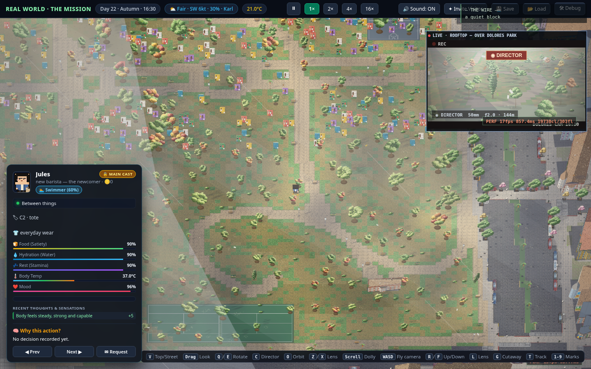

Real World is a neighborhood, not a level.
Set on real streets around Dolores Park in San Francisco's Mission District, Real World is a persistent life simulation where twenty-eight fictional residents — eight main characters with full AI minds, twenty ambient neighbors — live, work, feud, and make up around the clock. The world runs whether you're watching or not.
Watching is the free heart of the game.
Follow any resident through their day. Read the public request feed — every intervention anyone has bought, attributed and priced in the open. Catch up on the week's drama like a serial. Observation never costs anything.
When watching isn't enough, buy a moment — not the world.
File a request: a declared action with a declared duration, priced upfront in credits and capped hard. Possess your own character for thirty minutes. Call for rain over the park. Nudge a neighbor — an ask, not mind-control; they can say no. Requests sort themselves into exclusive, compatible, or queued; expire unfired and you're auto-refunded. When time runs out, the AI takes the character back seamlessly.
Or move in.
Hire a character onto the cast — the only one you'll ever control — rent a room in game dollars, work a job at Mudhaus or Auerbach Hardware, save toward a deed. The ladder is the Mission's oldest story: tenant, owner, landlord. Miss rent and you can be evicted, same as anyone.
How it works
1. Watch — open the neighborhood, follow anyone, read
the public feed. Free forever.
2. Request — when you want to act, file a time-boxed
request priced in credits upfront.
3. Move in — hire a character onto the cast, rent a room,
work a job, climb the tenant → owner → landlord ladder.
The request menu (current proposal — finalized before launch)
| Ask | Cost (1 credit ≈ $0.01) |
|---|---|
| Possess your own character | 1.5 cr/min, 15–120 min — 30 min ≈ 45 cr |
| Camera director (spectator-side only) | 10 cr / 30 min |
| NPC nudge (an ask — they can decline; 50% back if they do) | 40 cr flat |
| Weather block over the neighborhood | 40 / 70 / 100 cr for 1 / 2 / 4 h |
| Event trigger at a venue or the park | 200 cr flat |
| Hire a character onto the cast | 500 cr one-time, human name review, slot-capped |
Queued requests cost 15% less and auto-refund if they expire unfired. Exclusive actions get human review; surge pricing (×1.5–2.5) is always shown before you pay, and cooldowns are never purchasable. Denied requests never bill.
- Everything in the screenshots is a real development-build capture.
- The eight main characters can never be possessed by anyone, including us.
- No loot boxes, no cash-out, no ads inside the sim view. Rewarded ads are opt-in from the wallet screen only, capped per day.
What we don't sell
No loot boxes, no gacha, no cash-out, no crypto, no voice lines. Credits are non-transferable and never redeemable for money.
All characters, businesses-as-populated, and addresses in Real World are fictional or system-generated. The streets are real; the people are not.